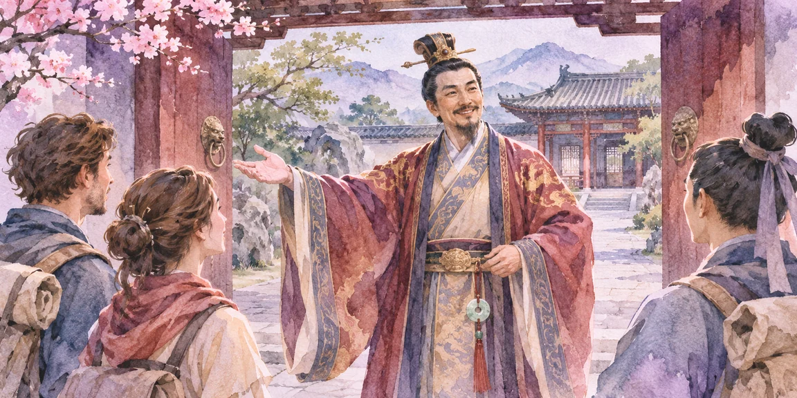

Mengchang Jun: The Power of Relationships
읽고 · 말하고 · 생각하는 영어

학습 안내
Mengchang Jun: The Power of
Relationships
맹상군: 사람을 얻는 힘
핵심 단어 · Key Vocabulary
nobleman
useless
귀족
쓸모없는
ancient
ability
고대의
능력
welcome
recognize
받아들이다, 환영하다
알아보다, 인식하다
talented
underestimate
재능 있는
과소평가하다
ordinary
unique
평범한
독특한, 특별한
special skill
escape
특별한 능력
빠져나오다
crisis
danger
위기
위험
surprisingly
valuable
놀랍게도
가치 있는
회화 패턴 · Speaking Patterns
At first, I thought ______.
처음에는 ______라고 생각했다.
But later, I realized ______.
하지만 나중에 ______라는 것을 깨달았다.
Now, I think ______.
지금은 ______라고 생각한다.
Example: At first, I thought he was ordinary, but later, I realized he had a special talent.
예문: 처음에는 그가 평범하다고 생각했지만, 나중에는 특별한 재능이 있다는 것을 깨달았습니다.
본문 읽기 · Reading
Mengchang Jun was a powerful nobleman in ancient China. He was famous for welcoming many different kinds of people into his home. Some of them were talented, but others did not seem to have any special skills. People sometimes wondered why he welcomed so many ordinary people.
One day, Mengchang Jun faced a serious crisis. Surprisingly, some of the people who seemed useless became very helpful. Each person had a special ability that nobody had noticed before.
One person was good at imitating the sound of a dog. Another person was very good at stealing. These unusual skills helped Mengchang Jun escape from danger.
The story teaches us an important lesson: We should never judge people too quickly. Everyone has a unique talent, and we may not recognize it at first. Sometimes, the person we underestimate today may become the person who helps us tomorrow.
한국어 해석 · Translation
맹상군은 고대 중국의 강력한 귀족이었습니다. 그는 다양한 사람들을 자신의 집에 받아들이는 것으로 유명
했습니다. 어떤 사람들은 재능이 있었지만, 어떤 사람들은 특별한 능력이 없어 보였습니다. 사람들은 왜 그
가 그렇게 많은 평범한 사람들을 받아들이는지 의아해하기도 했습니다.
어느 날, 맹상군은 심각한 위기에 처했습니다. 놀랍게도 평소에는 쓸모없어 보였던 사람들이 큰 도움이 되
었습니다. 각각의 사람에게는 아무도 이전에 알아보지 못했던 특별한 능력이 있었습니다.
한 사람은 개 짖는 소리를 흉내 내는 데 능숙했습니다. 또 다른 사람은 물건을 훔치는 데 매우 능숙했습니다.
이런 특이한 능력들이 맹상군이 위기에서 빠져나오는 데 도움을 주었습니다.
이 이야기는 우리에게 중요한 교훈을 줍니다. 우리는 사람을 너무 빨리 판단해서는 안 됩니다. 모든 사람에
게는 자신만의 특별한 재능이 있으며, 우리는 그것을 처음부터 알아보지 못할 수도 있습니다. 오늘 우리가
과소평가했던 사람이 내일 우리를 도와주는 사람이 될 수도 있습니다.
토론 질문 · Discussion Questions
Have you ever underestimated someone who later surprised you?
처음에는 과소평가했지만 나중에 당신을 놀라게 한 사람이 있나요?
What makes a person truly valuable?
사람을 진정으로 가치 있게 만드는 것은 무엇이라고 생각하나요?
Do you think everyone has a special talent? Why or why not?
모든 사람에게 특별한 재능이 있다고 생각하나요? 왜 그렇게 생각하나요?
Why do you think Mengchang Jun treated ordinary people with respect?
맹상군은 왜 평범한 사람들을 존중했다고 생각하나요?
What can we do to avoid judging people too quickly?
사람을 너무 빨리 판단하지 않으려면 우리는 어떻게 해야 할까요?
예시 답변 · Sample Answers
Yes, I have. I once thought a quiet coworker was not very confident. But later, I realized that she was very thoughtful and good at solving problems.
(네, 있습니다. 예전에 조용한 동료를 자신감이 별로 없는 사람이라고 생각했습니다. 하지만 나중에 그녀가 매우 사려 깊고 문제를 해결하는 데 능숙하다는 것을 알게 되었습니다.)
I think kindness, honesty, and reliability make a person truly valuable. A person who keeps their promises and helps others is someone I can trust.
(저는 친절함, 정직함, 그리고 신뢰성이 사람을 진정으로 가치 있게 만든다고 생각합니다. 약속을 지키고 다른 사람을 도와주는 사람은 제가 신뢰할 수 있는 사람입니다.)
Yes, I do. Everyone has something they are good at. Some talents are easy to see, but others may take time to discover.
(네, 그렇다고 생각합니다. 모든 사람에게는 잘하는 무언가가 있습니다. 어떤 재능은 쉽게 보이지만, 어떤 재능은 발견하는 데 시간이 걸릴 수 있습니다.)
I think he believed that everyone had value. He understood that a person's background or appearance does not tell us everything about them.
(그는 모든 사람이 가치가 있다고 믿었던 것 같습니다. 그는 사람의 배경이나 외모만으로 그 사람의 모든 것을 알 수 없다는 것을 알고 있었습 니다.)
We should take time to listen and understand people. Instead of judging them by their first impression, we should try to learn more about them.
(우리는 사람들의 이야기를 듣고 이해하는 데 시간을 가져야 합니다. 첫인상만으로 판단하기보다는 그 사람에 대해 더 알아보려고 노력해야 합니다.)
오늘의 메시지 · Today’s Message
Every person has value beyond what we can see at first.
모든 사람에게는 첫눈에 보이는 것 이상의 가치가 있습니다.
배경 지식
맹상군(孟嘗君)은 중국 전국시대 제나라의 귀족이었습니다. 그는 사람을 신분이나 겉모습만으로 판단하지 않고
다양한 사람들을 자신의 식객으로 받아들였다고 전해집니다.
그의 집에는 무려 3,000명의 식객이 있었다고 합니다. 그중에는 특별한 재능이 없어 보이는 사람들도 있었습니
다.
어느 날 맹상군은 위기에 처하게 됩니다. 그런데 평소에는 별로 쓸모가 없어 보였던 식객들이 자신만의 특별한
재능을 발휘하면서 맹상군을 위기에서 구해 줍니다.
이 이야기는 우리에게 중요한 교훈을 줍니다. 사람의 가치는 처음부터 눈에 보이지 않을 수 있습니다.
출처: 사마천, <사기>중 「맹상군열전」